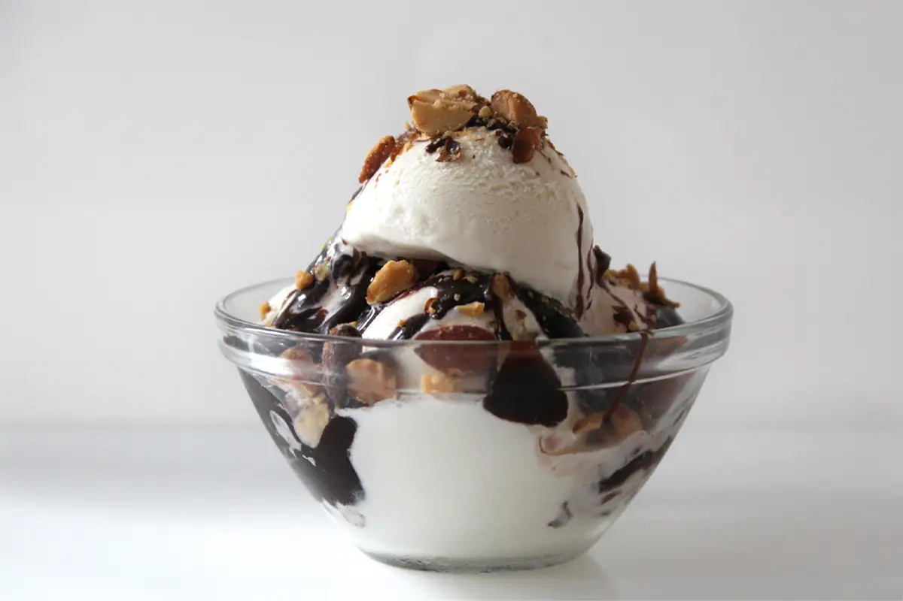

Chocolate Sundae

Description
This Tin Roof Chocolate Sundae recipe is courtesy of H5mag.
Serves 6 and takes approximately 40 minutes to prep and make.
Ingredients
- 2 x 385 g can condensed milk
- 2½ t vanilla extract
- ¼ t salt
- 2 cups whipping cream
- 1 x 380 g can Ideal evaporated milk
- 160 g milk chocolate , broken into small pieces
- 300 g roasted and salted cashews
- 100 g cherries
Steps
Home